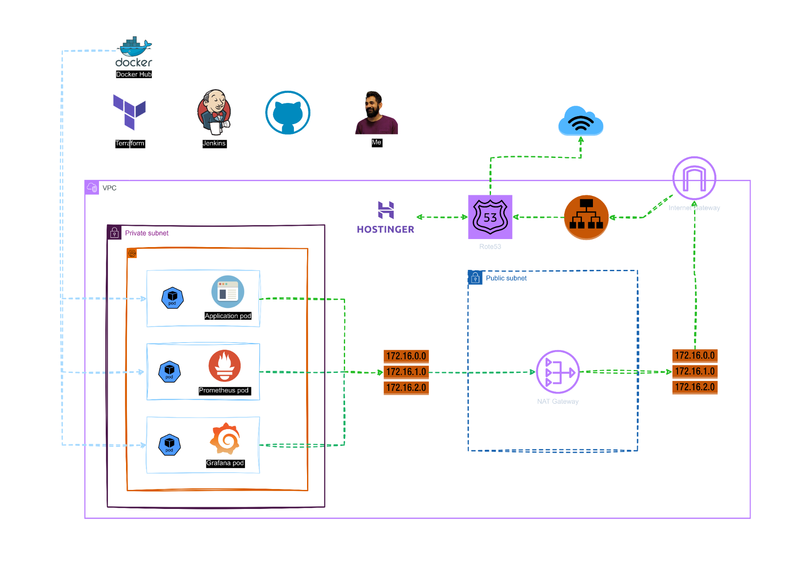

Welcome to the architectural breakdown of our cutting-edge cloud-native application, meticulously designed for performance, scalability, and reliability.
1. Development and CI/CD Pipeline:
Terraform: Our infrastructure as code tool, Terraform, ensures that our environment is consistent and repeatable.
Docker Hub: Serving as our container registry, Docker Hub stores and manages Docker images efficiently.
Jenkins: Our trusty Jenkins server orchestrates the continuous integration and deployment pipeline, ensuring seamless code integration and delivery.
GitHub: The central hub for our code repository, facilitating collaboration and version control.
Me: As the developer, I bring together all these tools to deliver robust and innovative solutions.
Infrastructure

2. Cloud Infrastructure:
Amazon Web Services (AWS): The backbone of our infrastructure, providing a scalable and reliable environment for our application.
Virtual Private Cloud (VPC): Ensures our application is securely isolated within its own network.
Private and Public Subnets: Strategically separated to enhance security and performance.
NAT Gateway: Facilitates secure outbound internet traffic for resources in the private subnet.
Internet Gateway: Manages inbound and outbound internet traffic for resources in the public subnet.
Route Tables: Define the traffic routing rules within our network, ensuring smooth communication between components.
All the above infrastructure components are provisioned in AWS using Terraform, ensuring consistency, scalability, and ease of management.
3. Kubernetes Ecosystem:
Amazon EKS (Elastic Kubernetes Service): Our managed Kubernetes service, which orchestrates the deployment, scaling, and management of containerized applications.
Application Pod: Hosts the core application, ensuring high availability and scalability.
Prometheus Pod: Monitors the performance and health of the application, providing crucial metrics.
Grafana Pod: Visualizes the data from Prometheus, offering actionable insights through interactive dashboards.
4. Load Balancing and DNS:
Application Load Balancer (ALB): Distributes incoming traffic across multiple targets, enhancing availability and fault tolerance.
Amazon Route 53: Our DNS service, which translates human-readable domain names into IP addresses, seamlessly directing traffic to the appropriate resources.
Hostinger DNS: Our chosen DNS provider, ensuring reliable and fast domain name resolution.
WorkFlow
1. Development and Deployment:
Developers commit code to GitHub.
Jenkins triggers the CI/CD pipeline, building Docker images and pushing them to Docker Hub.
Terraform provisions the necessary infrastructure on AWS.
2. Application Deployment:
The EKS cluster pulls Docker images from Docker Hub.
The application, along with monitoring (Prometheus) and visualization (Grafana) pods, is deployed within the EKS cluster.
3. Traffic Management:
Route 53 and Hostinger DNS handle domain name resolution.
ALB distributes incoming traffic to the application pods.
NAT Gateway and Internet Gateway manage outbound and inbound traffic, respectively.
Security and Monitoring:
Our architecture emphasizes security and monitoring at every level. With the private subnet shielding sensitive resources and Prometheus and Grafana providing comprehensive monitoring and visualization, we ensure our application remains secure and performant.
Explore the attached diagram to see how each component integrates seamlessly, providing a robust foundation for our innovative solutions.